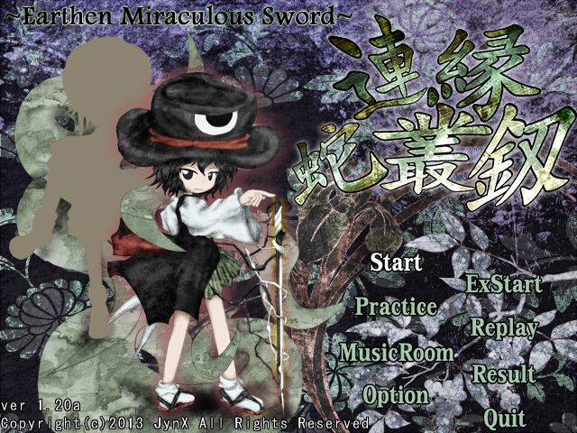
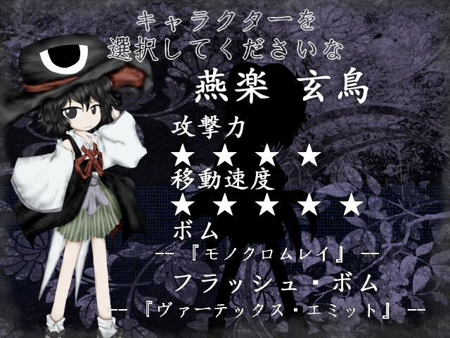

Len'En Earthern Miraculous Sword ("Чудотворный глиняный меч") - вторая игра в серии, вышедшая 18 ноября 2013 года, одновременно с первой игрой.
В игре, по стандарту жанра, присутствует 4 сложности: Лёгкая, Нормальная, Сложная, Нереальная. Дополнительный уровень имеет только 3: Лёгкая, Обычная, Абсурдная.
В этот раз игроку даётся 3 играбельных персонажа на выбор, без каких-либо дополнительных условий для открытия, как это было в первой игре.
Игра за каждого из персонажей рассказывает один и тот же сюжет, но с разных точек зрения. Но если в прошлой игре сценарии персонажей шли одновременно и не влияли на концовку, в EMS сюжет повествуется в формате "Выбери своё приключение", то есть исход событий определяет уже сам игрок.
Как и в первой игре, здесь присутствует секретный персонаж, который открывается при 100% прохождении за всех остальных, и был добавлен после выхода 4-ой игры серии.

В Мугенри происходит странный инцидент: странные облака в небе не рассеиваются очень долго. Посчитав это явление слишком подозрительным, главные герои - Ябусамэ Холен и Цубакура Энраку, которые недавно получили свой пост священников и защитников, на спор отправляются на разведку. В случае, если игрок выбрал 3-его персонажа - Куроджи Шитодо, одну из знакомых главных героев, то на разведку отправляется уже она, но не ради защиты Мугенри, а своей семьи.
В ходе расследования выбранный герой натыкается на странную постройку в глубине леса, над которой облака сгущаются больше всего. Как оказалось, в этом сооружении проводится ритуал по перемещению духа легендарного меча Тасокена в глиняный сосуд, который имитирует этот меч внешне. Герои останавливают ритуал, и небо наконец-то очищается.
Если во время прохождения игрок достаточно заполнил "шкалу облачного цветка", то после финальной битвы он может сразиться с тем самым Тасокеном.
На дополнительном уровне выбранный герой встречается с родственником зачинщика инцидента, который пытается отомстить за прерванные планы, но тоже проигрывает.
История секретного играбельного персонажа - Сузуми Кузу - является пересказом сюжета выше, так как он, как подразумевается, "перечитывает" события из прошлого в настоящем, то есть после событий 4-ой части.